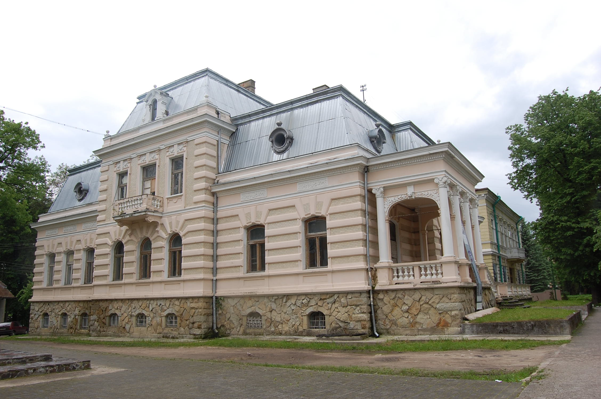
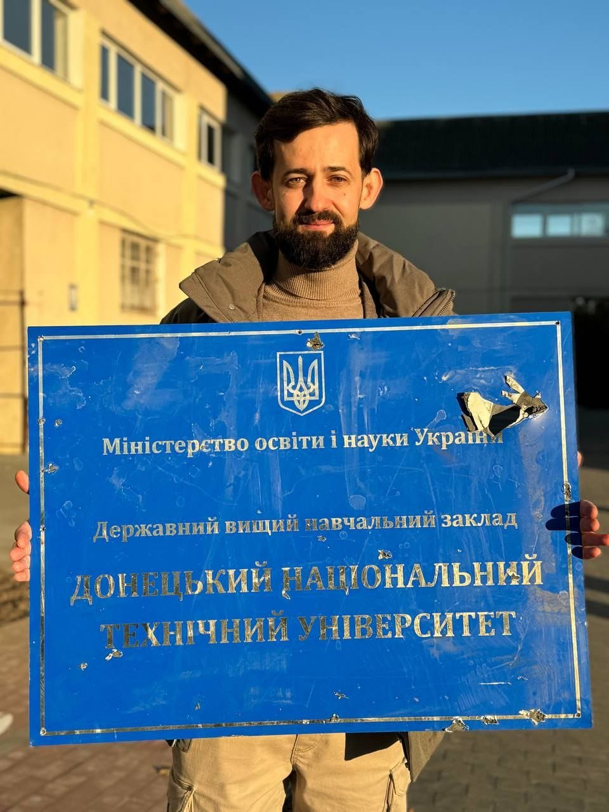

Ця сторінка — заглушка для вашого майбутнього сайту. Щойно ми визначимо тему й концепцію — тут з'явиться повноцінний веб-продукт.
Сучасний дизайн, адаптивна верстка, швидке завантаження — все за нашим стандартом.
Ваш майбутній проєкт — унікальний. Ми підберемо стиль, кольори та структуру, що найкраще передають суть продукту.
Від концепції до запуску — без зайвих узгоджень, з повагою до вашого часу.


«Хороший сайт — це не шаблон. Це рішення, яке точно відповідає вашій задачі.»